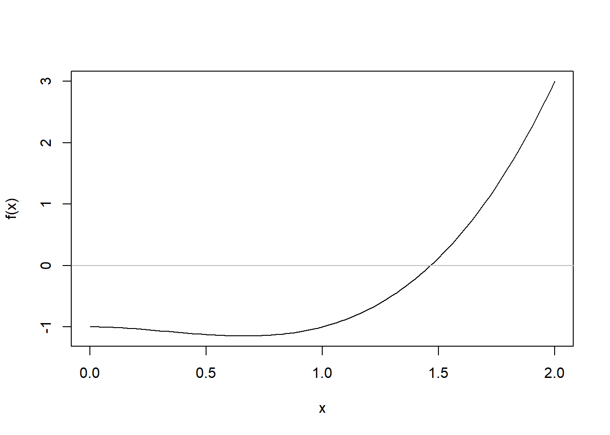

2 Lecture
2.1 Machine epsilon
The first exercise from this lecture was to write a program to determine the relative machine epsilon.
# First we define a function that takes no input
machine.eps <- function() {
# We guess that the machine epsilon is less than 1, so this is where we start
eps <- 1
# Then we want to add eps times one half and check if the result is neq 1
while (1 + eps / 2 != 1) {
# If that is not the case we divide eps by 2 and check the condtion again
eps <- eps / 2
}
# When the condition no longer hold our result is the relative machine
# epsilon, i.e. the point where the computer can no longer distinguish 1 and 1 + eps
return(eps)
}
machine.eps()## [1] 2.220446e-162.2 Finding roots with search algorithms
2.2.1 Defining the objective function
Then we defined a function.
Tested it for relevant values
## [1] -1## [1] 3## [1] 0.125And plotted the output for the function

We then went about finding the root of this function, first by naive search and thereafter using the bisectional method.
2.2.2 Naive search
## [1] 0.5310173## [1] -1.132243f_tolerance <- 1e-5
naive_search <- function() {
iterations <- 0
while (abs(f_candidate) > f_tolerance) {
x_candidate <- runif(n = 1, a, b)
f_candidate <- f(x_candidate)
iterations <- iterations + 1
}
cat(
"x candidate:\t",
x_candidate, "\t",
"f candidate:\t",
f_candidate, "\t",
"number of iterations:\t",
iterations)
}
naive_search()## x candidate: 1.465572 f candidate: 1.327446e-06 number of iterations: 4415502.2.3 Bisectional method
bisection <- function(f, a, b, tolerance = 1e-5, max_iterations = 1000) {
iterations <- 0
for (i in 1:max_iterations) {
c <- (a + b)/2
if (sign(f(a)) == sign(f(c))) {
a <- c
} else {
b <- c
}
iterations <- iterations + 1
if (abs(f(c)) < tolerance){
break
}
}
cat("Root:\t", c, "In:\t", iterations, "iterations")
}
bisection(f, 0, 2)## Root: 1.465569 In: 18 iterations